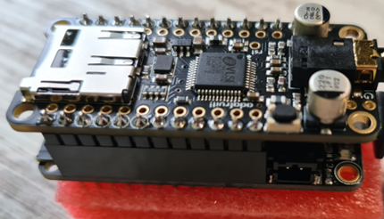
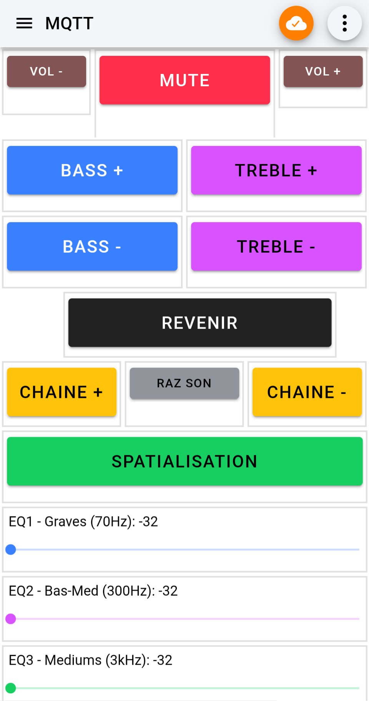

SAÉ 2.02
Mesurer et caractériser un signal ou un système
Objectif
Création d'une Web Radio portable capable de diffuser des flux audio Internet (MP3/AAC) en stéréo. L'objectif est d'interfacer des composants matériels et de développer l'interface logicielle pour un contrôle distant via smartphone.
Architecture réalisée
- Assemblage matériel d'un microcontrôleur ESP32 (Adafruit HUZZAH32) et d'un décodeur audio matériel VS1053 communiquant via le bus SPI.
- Développement en C/C++ sous l'IDE Arduino avec gestion dynamique de la connexion Wi-Fi via WiFiManager.
- Implémentation du traitement audio avancé incluant le contrôle du volume, un égaliseur 5 bandes et la spatialisation du son.
- Intégration du protocole léger MQTT (bibliothèque PubSubClient) pour permettre le pilotage bidirectionnel complet de la radio depuis l'application mobile IoT MQTT Panel.
- Le développement itératif a abouti à une version finale robuste assurant la synchronisation en temps réel des commandes matérielles et logicielles.
Compétences R&T mobilisées
- AC13.02 — Lire, exécuter, corriger et modifier un programme.
- AC13.03 — Traduire un algorithme, dans un langage et pour un environnement donné.
- AC11.01 — Maîtriser les lois fondamentales de l'électricité afin d'intervenir sur des équipements de réseaux et télécommunications.
Technologies
Preuve

Application MQTT sur téléphone
